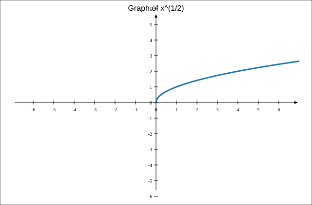
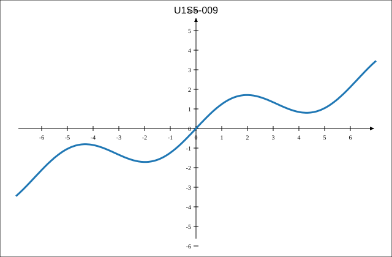
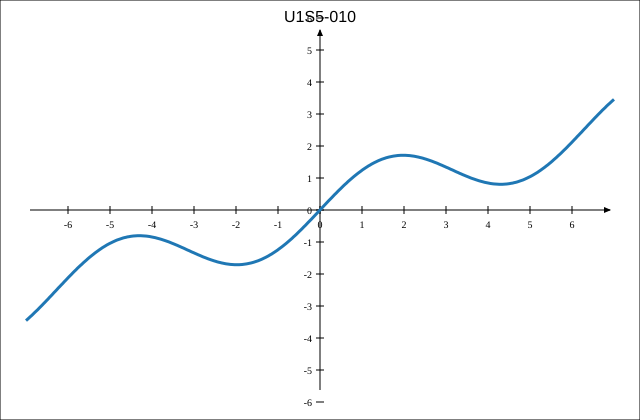
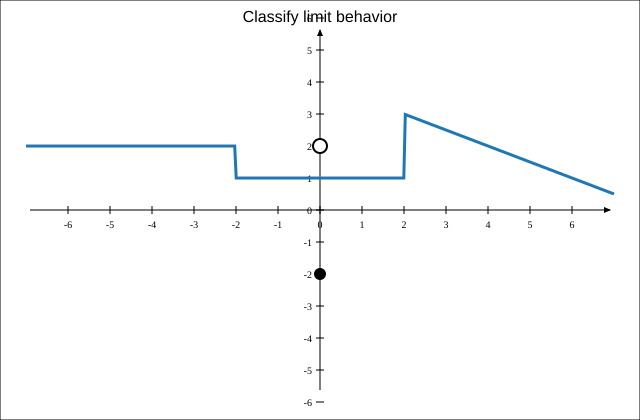
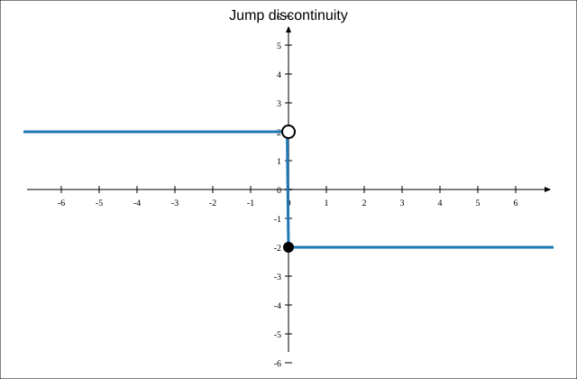
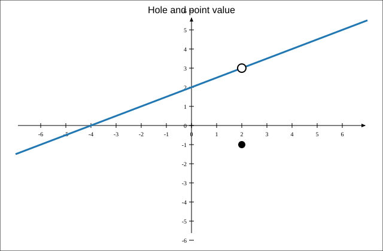
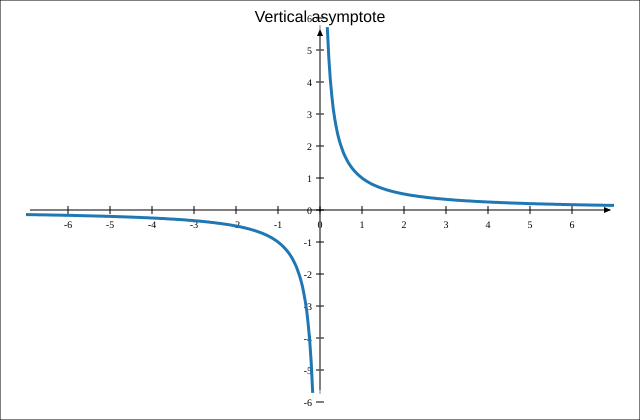

Evaluate without a calculator: \[32^{2/5}\]
Use technology to graph \(f(x)=x^{1/2}\). State the domain, range, intercepts, and interval of increase/decrease.

Compare \(x^{2/3}\) and \(x^{3/2}\). Discuss meaning, domain, graph shape, and how each can be rewritten with radicals.
Create a rational exponent function with domain \([4,\infty)\), range \([-2,\infty)\), and increasing behavior. Write the equation and explain how it meets the conditions.
Use the graph to find \(\lim_{x\to -2^-} f(x)\), \(\lim_{x\to -2^+} f(x)\), and \(f(-2)\).

Use the graph to determine whether \(\lim_{x\to -3} f(x)\) exists.

Complete the statement: If \(\lim_{x\to a^-} f(x)=3\) and \(\lim_{x\to a^+} f(x)=3\), then \(\lim_{x\to a} f(x)=\underline{\hspace{1in}}\).
Complete the statement: If the left-hand and right-hand limits are not equal, then the two-sided limit \(\underline{\hspace{1.5in}}\).
Use the graph to determine the limits at \(x=-2\) and \(x=2\). State whether each limit exists.
Use the graph to determine \(\lim_{x\to 2} f(x)\), \(f(2)\), and whether the function value affects the limit.
Use the graph to classify each special behavior shown as a jump, hole, point value difference, or vertical asymptote. Then state which limits exist.

Design a graph that includes a hole, a jump, and a point where the limit exists but is not equal to the function value. Label the important points and write one limit statement for each feature.
Find the inverse of \(f(x)=\frac{x+4}{3}\).
Let \(f(x)=\sqrt{x-5}\).
Explain why \(f(x)=x^2\) does not have an inverse function unless its domain is restricted.
Create a function that does not have an inverse function on its full domain, then restrict the domain so that it does.
Use the graph to determine \(\lim_{x\to 2} f(x)\).
Use the graph to determine \(\lim_{x\to 1^-} f(x)\) and \(\lim_{x\to 1^+} f(x)\).

Use the graph to determine the left-hand limit, right-hand limit, function value, and whether the two-sided limit exists at \(x=0\).

Use the graph to determine whether the limit exists at the vertical asymptote. Explain the one-sided behavior.

Use the graph to determine \(\lim_{x\to 2} f(x)\), \(f(2)\), and whether the function value affects the limit.
A student claims the limit at \(x=-1\) does not exist because the graph has a break. Use the graph to evaluate the claim.
Use the graph to classify each special behavior shown as a jump, hole, point value difference, or vertical asymptote. Then state which limits exist.
Create a graph where \(\lim_{x\to 2} f(x)=5\) but \(f(2)=-1\). Include a brief explanation of how your graph satisfies both conditions.